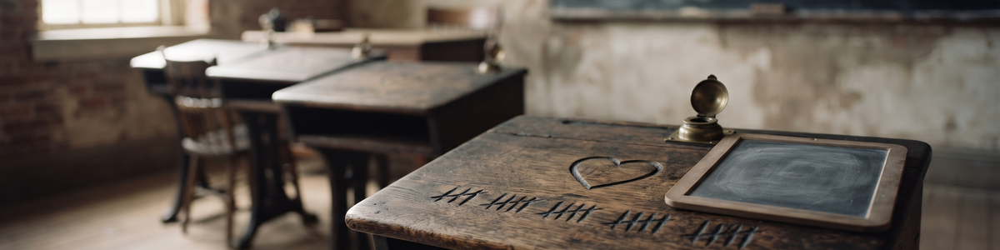

codeintel-hardcoded-password-detector
The Carved Desk. A hardcoded password detector that scans a file or a directory tree for secrets written into the text, and reports each find covered: by file, key name, length, and entropy, never the value itself.

Two patternsThe whole detection is two case insensitive regular expressions over key names, each taking the value after a colon or equals sign
Values maskedA find reports its file, its key name, the value masked as asterisks, its length, and its Shannon entropy
Entropy advisesEntropy never gates a find; past the threshold it only adds a warning that the find may be a false positive
Every file sentDirectory mode sends every file whatever its type to the text scanner, so a binary is logged as a read error rather than skipped
Usage
python3 main.py PATH [-v] [-e 4.0] [-l LOGFILE]
The first pattern covers the names password, pwd, secret, and key; the second covers api_key, apikey, auth_token, and token. The run exits 1 only when the path does not exist; finds never change the exit code.
| Option | What it does |
|---|---|
path | The file or directory tree to scan. Required. The README parameter list omits it; the code requires it. |
-v | Verbose logging. |
-e | The entropy threshold for the false positive warning. Default 4.0. |
-l | Write the log to a file instead of stdout. |

What the scan cannot tell you
- A match means a key name and a value shape stood together in the text. Whether the value is a live secret, a placeholder, or a test fixture is not judged.
- The entropy figure is advisory only: a low entropy live password is reported without the warning, and a high entropy harmless string is reported with it.
- Secrets held in shapes the two patterns do not name, split across lines or built at runtime, are outside the scan entirely.
Requirements
Python, standard library only. The requirements file is a comment saying so, and noting that the bandit, flake8, pylint, and pyre-check entries that stood there before were never imported or run by this tool.